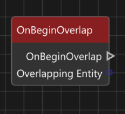
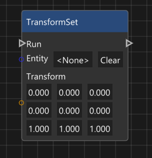

During the sixth project we continued to work in our groups, giving us a good opportunity to get used to working in a more consistent team compared to how much we've switched around earlier in the education.
Coming into this project we knew as a group that we were planning to lean into a more ECS like structure for the game, during the previous project we had resorted to old habits
and ended up treating some classes as though they were basically their own objects, storing a bunch of data of their own and complocating the flow of the code.
As such we knew that we wanted to hammer home and lean into building something which actually worked as an ECS structure. For my part I was mostly working on implementing
a flexible visual scripting system, making sure to minimize any further complications in the flow of the code, making sure each node did the thing it was meant to, and
accessed only the data necessary in order to achieve that task.
I believe that my work on implementing many different nodes did wonders to hammer home that thought process, as the nodes themself never really store their own data,
outside of their inputs, and outputs, and this really did force me to consider what was, and was not necessary to achieve any given task in an efficient manner. And the
efficiency was important, due to an unfortunate prevalance of sickness we ended up loosing out on a lot of time from our programmers, including myself, and thus a lot
of the code running on the cpu is directly connected to and based on our scripting system, so any unnecessary code in there could greatly hurt performance.
Roughly after a third of the project had passed I was informed of the necessity of working on the visual scripting in our engine. It is something which was implemented
at a base level early on, however as it became obvious that it would be too inefficient for programmers to directly create everything, so I had to get up to speed quick and
get to work on adding more flexibility to various different nodes, and adding in new functionality.
Among others I ended up quickly implementing basic support for the utilization of accessing and changing transforms, getting references to Entities in game, and, what ended up
being most challenging, implementing the ability to create, and call custom events, both within scripts, and between scripts. It turned out to be quite difficult to
access custom events which were created in another script, so that took a while, but in the end I did manage to achieve something passable, which allowed us to create scripts
to handle many complex tasks.


These were the custom Event nodes, a major undertaking, but they ended up working, both within a single script, and in between scripts.
In the first image I already selected the desired target, which is why the names of the nodes match, then the others show how one would set a new target
which in this case was fetched from a different entity, which had one script, and two valid custom events.
I started out with creating a basic version which I could add to a single script, where I could create a custom node, which I could
give a name, and then I could creaste a node which would find the available custom events in the current scripts, and let me select one of them.
This allowed for more options when organizing nodes within a single script, but the real goal was to be able to activate events on a different script.
Adding in that functionality turned out to be more complicated of a task, since nodes weren't exactly easy to access and find on different scripts. In the end
I implemented a system where I could find all the scripts on the targeted entity, and from there I could get their custom event nodes, it required some creative
work, but I did manage to implement it within a relatively short time frame.




In addition to the custom event nodes I also did some work on these nodes, which together ended up being a good foundation for the basic game logic which we needed.
In particular the ObjectReference node was incredibly important, it ended up being an important part of most scripts, since it allowed a lot more flecibility with
messaging and interacting with entities outside of the one which the current script was on.
This is a quick demonstration of the ObjectReference variables, they allow for the selection of any object in the scene through simple drag and dropping. I can't really
take credit for the drag and drop aspect, but the integration with the scripts was my doing.
In the script you could also click on the value of the object reference in order to select one of the available objects, which is what would be used by, for example,
the Custom Events in order to know where to check for scripts.


I'd like to show off two more quick things I made, one for playing audio, since I was still mostly the one in charge of handling audio.
And also seperate nodes for setting Position, Rotation, and Scale, since using a transform for everything became very inconvenient, as it would include data which
was simply set to default, as it usually wasn't getting used regardless.
Another thing I handled was to implement a working solution for prefabs early on in the project, since it would let our level designers build out scenes using those prefabs,
and I could improve them as the project continued. In the end I unfortunately didn't have the time to implement the ability to move individual objects which were a part of a
prefab after they were placed in a level, but I do think in the end that was likely not really necessary, and there were certainly more important things to handle first.
The video shows the latest iteration of the prefab, to begin with I simply loaded in the intended objects and grouped them together in a folder, but this lead to complications
when loading in a scene, so later on in the project I found a way to combine them into one object in the scene structure. They still do load in all the different objects in
the prefab, but it only saves the one parent object, which made it much easier to ensure it would be updated properly especially when the prefab base itself was edited.
I also continued developing my Audio Player, from early on I made the decision to rewrite how it reads and saves audio events, during the development of Spite A Dragon's Wake
we made use of nlohmann's json library in order to read the json which can be generated when creating a Soundbank, this was a convenient solution, however it lead to
the creation of a bunch of different files to keep track of. Focusing on this also meant calling for sound events using their names, meaning you had to look those up
if you ever wanted to add in a new audio events.
As a result, I planned to cut it down to simply need the Wwise_IDs.h file for everything. As such I ended up learning about writing my own code for iterating through
the file, treating it as a text file, and saving all the audio events in it into the game itself, as a result I was able to maintain debug functionality for playing any
sounds in runtime, by simply using the names, meanwhile I implemented the header file for usage in the code, making it much easier to find the names of audio events, and
failing to build in case you made a mistake with the name, instead of the game running as usual, just without the sound playing.